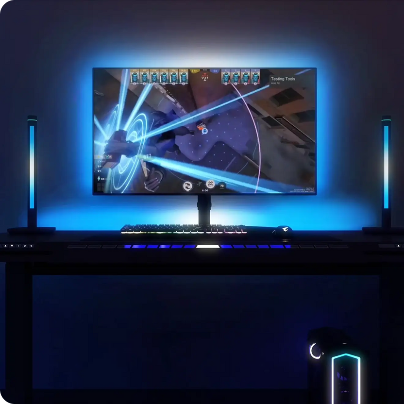
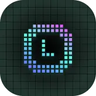

击杀瞬间桌面突然爆红光——一张游戏桌让我彻底不想回黑轴年代
跟朋友开黑被他的桌面 RGB 灯效勾住了好奇心，从第一次见到击杀爆闪，到自己搬回家折腾 Game Sync、像素屏文字，这篇讲我踩过的坑和真正香的时刻。
那顿晚饭之后，我回不去了
事情发生在上个月某个周二的晚上。我组了三排打 Valorant，其中一个朋友说他换了张新桌子，邀请我远程视频围观一下。
我以为就是那种带抽屉的电竞桌，直到他开摄像头的瞬间——画面里一张深色的桌板，边缘一圈 RGB 灯带正随着他的 Valorant 角色在地图里移动而微微呼吸。我还没反应过来，就听见他那边"啪"的一声，紧接着桌面突然爆了一道红光，持续一秒后又暗了下去。
"你刚才杀了人？"我问。
"四杀。"他头也不回地补了一枪，桌面又闪了一下，这次是金色的光带从桌头流到桌尾。"这叫 Game Sync，桌面直接读你游戏里的事件。"
原来真的有人把"击杀特效"从游戏里搬到了桌面上
我之前对 RGB 桌的印象还停留在"键盘鼠标灯条跟着音乐闪"——花里胡哨但没什么实际意义。朋友那张桌子不一样，它的灯效是读游戏内存来触发的：击杀红光、连杀金光、受伤暗红、死亡冷蓝呼吸，甚至拿到 MVP 的时候整个桌面会刷一遍彩虹流动。

我盯着他视频里那团爆起来的红光，突然觉得之前用了三年的黑轴键盘配普通书桌，好像差点什么。回家搜了一下，原来那张桌子叫 Atlas，做它的品牌是 Blacklyte。我抱着"先看看官网怎么吹"的心态去看了看他们的介绍，然后发现一件事——他们说 Atlas Driver 也就是那个控制软件，已经过了 Valorant Vanguard 和 CS2 BattlEye 这两大反作弊系统的认证。
这个细节很戳我。因为之前听过很多硬件监控软件被误判成外挂封号的故事，Driver 既然能过 Vanguard（这是目前业内最严格的反作弊之一），基本可以打消我最大的顾虑。
搬回家的那一刻，Driver 给了我一个下马威
桌子送到家那天我很兴奋——一百多斤的箱子自己扛上五楼，拆箱、摆好、接电源。Driver 安装包是从官方下载拿的，装完双击桌面图标，等了大概三十秒，Driver 弹出一个红框："设备离线"。
我当时的表情大概和大多数第一次碰新硬件的人一样："啊？"
踩坑一：管理员权限是必须的，而且要勾"长期"
我第一反应是蓝牙没配对。按桌手控条的高度+高度-长按五秒，灯也闪了，Driver 扫描就是扫不到。翻了翻 Driver 里的帮助说明和blacklyte文档，说读游戏内存必须管理员权限运行，我右键看了一眼兼容性，果然没勾。勾上之后重启 Driver，还是扫不到。
再看帮助，第二条：如果用蓝牙连接延迟太高，推荐切 WiFi 模式。我之前嫌 WiFi 麻烦没管，现在老实按 Driver 设置里的"切换到 WiFi"一步步来——它会先通过蓝牙把 WiFi 密码推给桌体，然后等三十秒让桌体重启 WiFi 连接。这个过程我差点以为卡住了，不停地点刷新按钮。
三十秒后，Driver 托盘图标终于从红的变成绿的。
踩坑二：Game Sync 的权限弹框你不能点"以后再说"
配对成功之后第一件事就是进 Game Sync 模式。Driver 左侧点过去，首次会弹一个权限请求："允许 Driver 监听游戏进程内存"。我手快点了"以后再说"，然后发现 Game Sync 死活不触发灯效。
回到设置里找半天，才在"隐私与安全"子菜单里找到那个被我跳过的开关。打开之后，Driver 托盘图标立刻显示"正在监听：Valorant"。我进训练场故意挨了 NPC 几枪，桌面终于闪了一下暗红色光晕——受伤事件映射对了。然后我一刀砍倒 NPC，桌面红光亮起，持续一秒后熄灭。
那个瞬间我觉得，这一百多斤搬值了。
真正让我上瘾的是 1000+ 效果库
Game Sync 每个游戏都有一张事件映射表，默认已经配好了——击杀爆闪、连杀金光、受伤暗红、死亡冷蓝呼吸、技能释放脉冲、MVP 彩虹流动。但真正好玩的是你可以自定义每一行：点事件行右侧的效果选择器，从 1000+ 效果库挑，调强度和持续时间，还能叠加震动反馈（如果桌体支持的话）。
我给自己配了个专属组合：击杀红光 + 爆闪 + 桌面轻微震动。朋友说我这组合太吵，但说实话，杀完人那一下震动和红光一起过来，比游戏里的击杀音效还让我爽。
然后我发现桌子上还藏着一个像素屏
Atlas 桌面的右下角嵌着一块 64×64 的 LED 显示屏，我一开始没注意，以为就是个装饰或者电量显示。直到某天不小心在手机上点开了 Blacklyte App，发现它能直接推内容进去。
最开始我只用来设置时钟——App 里有现成的时钟模式，推过去之后屏体就变成数字时钟，字体还能选。后来翻到文字功能，看到一个"生日祝福跳舞字"的预设，手痒给自己推了一个。
像素屏的真正玩法：把它变成宿舍门口的"有人/没人"牌
那块 64×64 的像素屏，比我想的实用得多。我试过的玩法：
- 滚动文字：App 里选"从右向左滚"效果，把一段长文字推过去，它会从右边进来、中间停留、左边出去。速度可以调快慢，慢了适合看清楚内容，快了就是一闪而过吸睛。
- 定时推送：App 有自动化功能，我设了每天早上八点自动推一个"起床啦"的跳动文字，晚上睡觉自动推一个"晚安"的静止字。
- GIF 叠加文字：底层选星空 GIF 做背景，上层叠加透明底的滚动文字。我现在的屏体就是这样——一片缓缓流动的星空，上面飘着一行"今天也要好好吃饭"。

有次我跟朋友视频，他一眼就看到我桌上那块屏飘着那行字，问我什么东西。我把 App 发给他，过了三天他回消息说："我在我工位那块小屏上推了个'摸鱼中'，被经理看见了问我能不能给他也弄一个。"
踩坑三：像素屏偶尔会全黑，别慌先查这四件事
用了大概两周，某天早上起床发现屏体全黑。第一反应是坏了，第二反应是想到官方说的死点保修。然后按文档里的排查清单逐条试：
- USB-C 供电——换了根线，还是黑
- 按功能按钮——能切预设模式，说明硬件没坏，只是内容没推
- 长按功能按钮五秒重置，然后重新配对 WiFi
- WiFi 密码前几天刚改！屏体还存着旧密码
我把屏体重新连上新 WiFi，推送了一下，亮了。
回头看：这张桌子到底改变了什么
之前我以为 RGB 灯效就是装 X 的，现在才明白它的意义——它把游戏里你看不见但实际发生的事件，搬到了桌面上。击杀不是一声枪响一个击杀标记，而是桌面红光爆起来那一秒的视觉确认。受伤不是屏幕上少了一格血，而是桌角闪过的暗红色光晕提醒你"该撤了"。
像素屏那块小屏幕，反而成了我最常用的部分。每天抬头就能看到时钟，偶尔飘一行自己写的小字，像一个无声的闹钟加便签。朋友说这两块屏幕加起来花了他多少多少钱，我没好意思说我也在盘算着怎么把桌角那块屏利用得更满。
有时候我想，Blacklyte 这个名字起得挺妙的——不叫什么 Max Gaming Desk 或者 Ultimate RGB Station，就一个 Blacklyte，像在说"黑夜里的一点光"。那种感觉很微妙：不是为了亮而亮，是为了在你专注的时刻，有一束光和你一起庆祝、一起紧张、一起提醒你该停下来喝口水。
这套硬件和配套的驱动、App 全在三个仓库里能拿到完整资料：GitHub 上更新最及时，国内网络不方便的话 Gitee 和 GitCode 也同步了同一份文档。